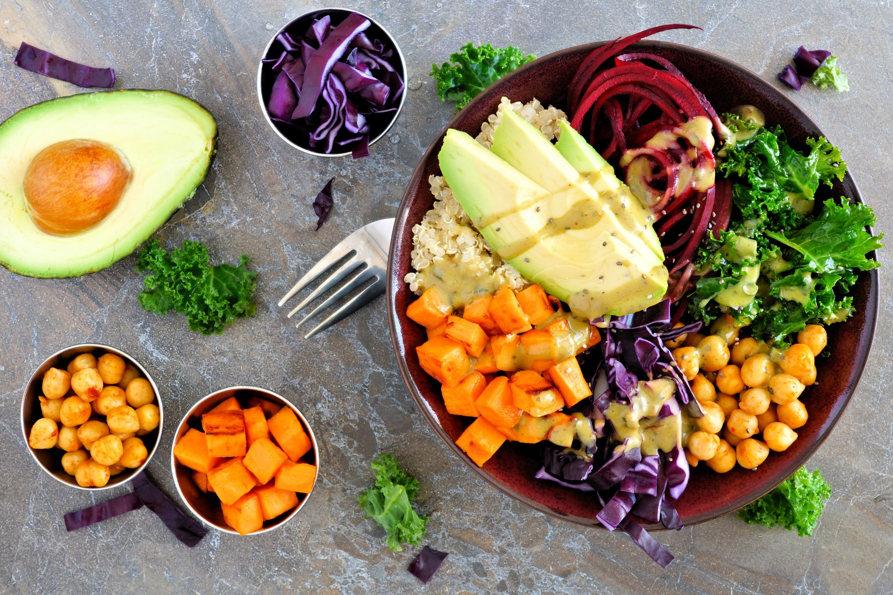
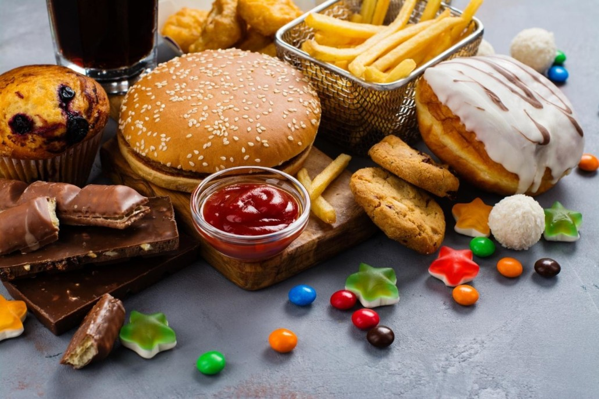
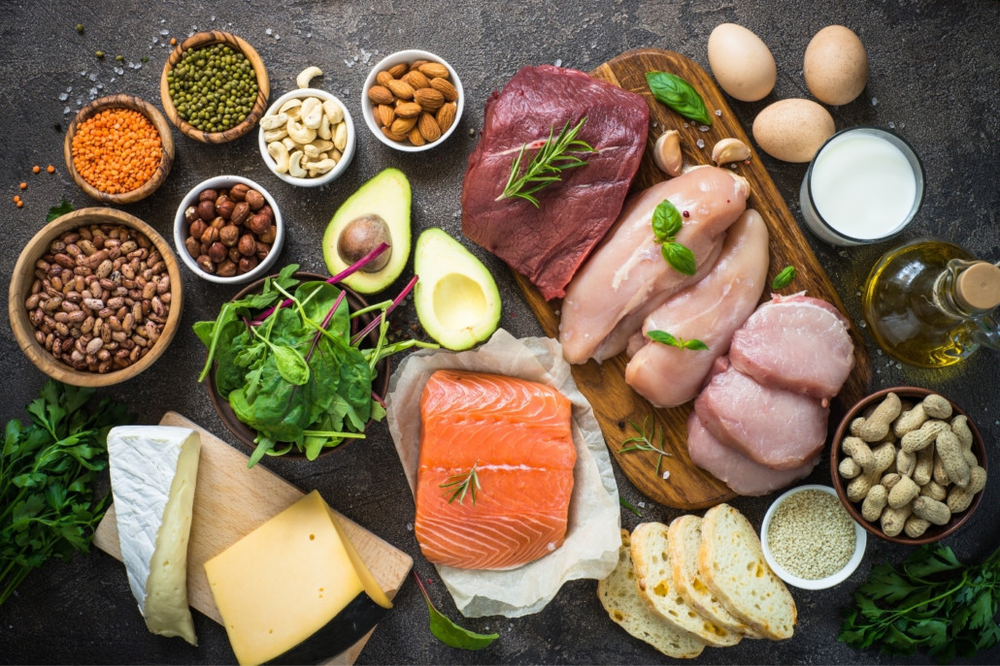
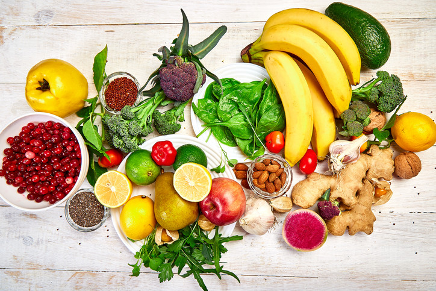
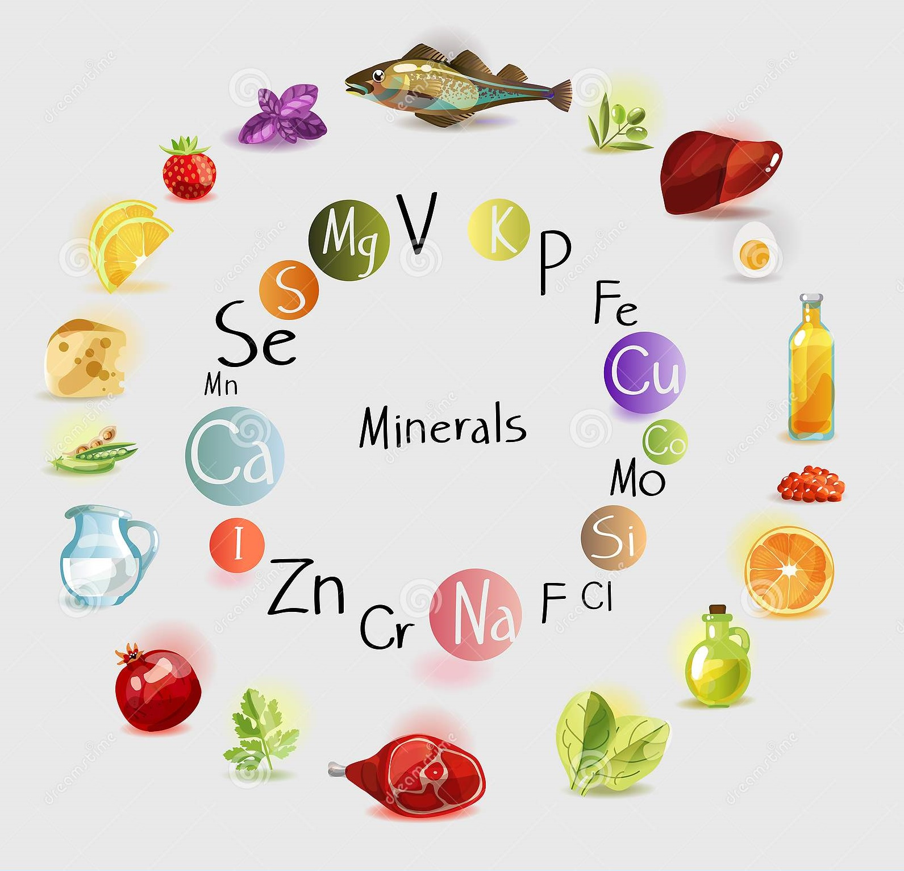

Nutrients are divided into six main types, carbohydrates, proteins, fats, vitamins, minerals, and water.
Each nutrient performs specific functions to keep the body healthy,
and all nutrients work together to contribute to good health
1.carbohydrates
-The healthiest sources of carbohydrates—unprocessed or minimally processed whole grains, vegetables, fruits and beans—promote good health by delivering vitamins,
minerals, fiber, and a host of important phytonutrients.

-Unhealthier sources of carbohydrates include white bread, pastries, sodas, and other highly processed or refined foods. These items contain easily digested carbohydrates that may contribute to weight gain, interfere with weight loss,
and promote diabetes and heart disease.

2.Proteins
Humans can’t survive without all nine essential amino acids.
Protein is essential to building bones ,and body tissues, such as muscles,
but protein does much more than that. Protein participates in practically every process of a cell.
It plays a part in metabolic reactions, immune response,
protein provides a source of energy, assists in cellular repair, form blood cells, and more.
Protein is made from twenty-plus basic building blocks called amino acids.
Because we don’t store amino acids, our bodies make them in two different ways: either from scratch,
or by modifying others by food.
Animal proteins are complete proteins.
That means they contain all the essential amino acids that you need in your diet.
Plant proteins are often, but not always, incomplete sources of protein, There are benefits and concerns with
both types of protein. But diets that rely mostly on plants
for protein have been linked to a lower risk of stroke, heart disease, and early death
Sources of complete protein include:
- Dairy products
- Poultry
- Beef
- Pork
- Eggs
- Quinoa
- Whole sources of soy such as tofu, edamame, and tempeh
Sources of plant protein are:
- Nuts
- Seeds
- Whole grains
- Legumes such as beans, peas, and lentils
- Vegetables

| The recommended dietary allowance to prevent deficiency for an average sedentary adult is 0.8 grams per kilogram of body weight |
|
Once you reach ages 40–50,to prevent losing muscle mass as you age, your protein needs increase to about 1–1.2 grams per kilogram
|
|
People who exercise regularly also have higher needs, about 1.1–1.5 grams per kilogram. People who regularly lift weights, or are training for a running or cycling event need 1.2–1.7 grams per kilogram
|
3.Fats
A small amount of fat is an essential part of a healthy, balanced diet. Fat is a source of essential fatty acids, which the body cannot make itself.
Fat helps the body absorb vitamin A, vitamin D and vitamin E. These vitamins are fat-soluble, which means they can only be absorbed with the help of fats.
Any fat that's not used by your body's cells or turned into energy is converted into body fat.
Likewise, unused carbohydrates and proteins are also converted into body fat.
All types of fat are high in energy. A gram of fat, whether it's saturated or unsaturated, provides 9kcal (37kJ) of energy compared with 4kcal (17kJ) for carbohydrate and protein.
The main types of fat found in food are:
saturated fats
unsaturated fats
Most fats and oils contain both saturated and unsaturated fats in different proportions.
As part of a healthy diet, you should try to cut down on foods and drinks that are high in saturated fats and trans fats and replace some of them with unsaturated fats.
Saturated Fat Sources:
- fatty pieces of meat such as beef and lamb
- some pork and chicken products
- dairy products including cream, whole milk, butter, shortening, and cheese
- coconut and palm oils
There are two main types of unsaturated fat:
Monounsaturated fat. This is found in olive,
canola,
peanut
, sunflower and safflower oils
, and in avocados,
peanut butter
most nuts.
It's also are part of most animal fats such as fats from chicken, pork and beef.
Polyunsaturated fat.
This is found in sunflower,
corn,
soybean
cottonseed oils.
It's also found in walnuts, pine nuts, flaxseed, and sesame, sunflower and pumpkin seeds
. Omega-3s fall into this category and are found in fatty fish, such as salmon, herring and sardines.
Try these tips to reduce unhealthy fat in your diet:
Use oil instead of butter. For example, saute with olive oil instead of butter, and use canola oil when baking.
Eat fish rich in omega-3 fatty acids, such as salmon, instead of meat at least twice a week.
Choose lean meat and skinless poultry. Trim visible fat from meat. Remove fat and skin from poultry.
Limit processed foods, which often contain saturated fat. Instead reach for whole fruits and vegetables when you're hungry.
A diet high in saturated fat may raise your low-density lipoprotein (LDL) cholesterol levels, which will raise your risk for heart disease and type 2 diabetes.
4.Vitamins:
Vitamins and minerals are micronutrients required by the body to carry out a range of normal functions. However, these micronutrients are not produced in our bodies and must be derived from the food we eat.
Vitamins are organic substances that are generally classified as either fat soluble or water soluble:
- Fat-soluble vitamins (vitamin A, vitamin D, vitamin E, and vitamin K) n tend to accumulate in the body.
- Water-soluble vitamins (vitamin C and the B-complex vitamins, such as vitamin B6, vitamin B12, and folate) must dissolve in water before they can be absorbed by the body, and therefore cannot be stored. Any water-soluble vitamins unused by the body is primarily lost through urine.

to know the functions and sources of vitamins
5.Minerals:
The body needs many minerals; these are called essential minerals. Essential minerals are sometimes divided up into major minerals (macrominerals) and trace minerals (microminerals). These two groups of minerals are equally important, but trace minerals are needed in smaller amounts than major minerals. The amounts needed in the body are not an indication of their importance.
A balanced diet usually provides all of the essential minerals. The two tables below list minerals, what they do in the body (their functions), and their sources in food.

to know more about
minerals
6.Water
Drinking water does more than just quench your thirst. It's essential to keeping your body functioning properly and feeling healthy.
Nearly all of your body's major systems depend on water to function and survive. With water making up about 60% of your body weight, it's no surprise what staying hydrated can do for you.
Here are just a few examples of the ways water works in your body:
- Regulates body temperature
- Moistens tissues in the eyes, nose and mouth
- Protects body organs and tissues
- Carries nutrients and oxygen to cells
- Lubricates joints
- Lessens burden on the kidneys and liver by flushing out waste products
- Dissolves minerals and nutrients to make them accessible to your body
Women should have about 2 litres (8 cups) of fluids a day, and men about 2.6 litres (10 cups).
Women who are pregnant or breastfeeding need more fluid each day than other women.